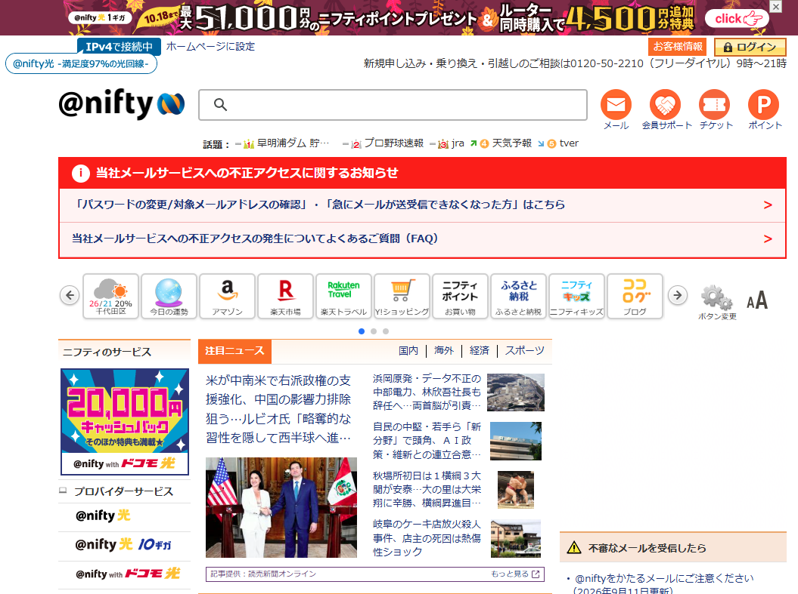
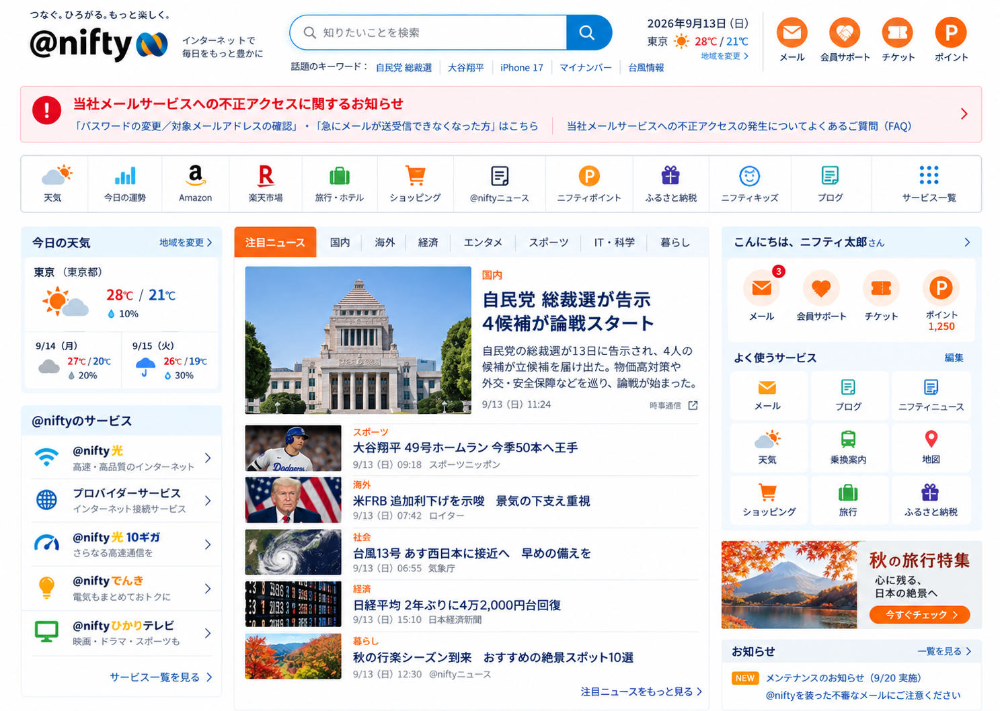

まず良かったところ
- 毎日使う情報とサービスを一か所から開ける
- 重要なセキュリティ情報を目立つ位置で伝えている
- ニュースと会員向け機能の両方へ短い導線がある
Gallery 004
毎日のインターネットを、ひとつの入口へ。
リデザイン公開
第4弾は、検索・ニュース・天気・メール・会員サービスが集まる@nifty。日常的に使う入口の多さを残しつつ、重要なお知らせ、検索、ニュース、サービスの順番を整理した現代的なポータルトップへ再構成します。


つなぐ。ひろがる。もっと楽しく。
@niftyらしいオレンジと青を活かしながら、検索を中心に、天気・ニュース・会員サービスを三つの領域へ整理。毎朝開いても疲れず、必要な情報へすぐ移動できる日常ポータルを目指します。
ポータルサイトの価値は、機能の数そのものより、毎日迷わず使えることにあります。@niftyが積み重ねてきたサービスの幅を保ちながら、今日必要なものから自然に目に入る順番へ整えます。